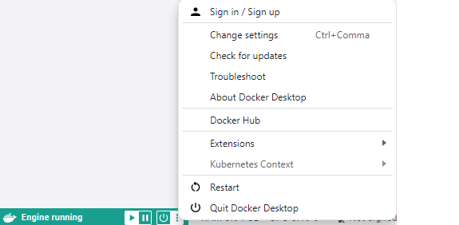

Graphics Processing Unit, etc.#
Before proceeding, install Docker Desktop: ref. Fundamental Software: Windows.
Key Windows Settings#
The references herein outline the fundamental NVIDIA installations required within Windows 11 that ensure the ability to run CUDA dependent programs/containers within Windows 11 or a WSL (Windows Subsystem for Linux) kernel.
NVIDIA Driver#
Beware of the mappings between CUDA Toolkit Version & CUDA Driver Version. Before installing unloading an NVIDIA driver, determine the machine’s CUDA GPU (Graphics Processing Unit) type. Within the Windows desktop
- Right Click
- SELECT Show more options
- SELECT NVIDIA Control Panel
The NVIDIA Control Panel’s landing page will display the name of the machine’s Graphics Processing Unit, e.g., NVIDIA RTX 2000 Ada Generation Laptop GPU. Subsequently, download the appropriate NVIDIA Driver; in relation to the above example
- Product Category: NVIDIA RTX/Quadro
- Product Series: NVIDIA RTX Series (Notebooks)
- Product: NVIDIA RTX 2000 Ada Generation Laptop GPU
- Operating System [If uncertain, check Settings &rarr System &rarr About]
Install.
During Installation
- AGREE AND CONTINUE
- Custom (Advanced)
- Perform clean installation
- HD Audio Driver
- RTX Desktop Manager
- Graphics Driver
- USB-C Driver
After installation NVIDIA will request a machine restart: restart.
NVIDIA CUDA Toolkit#
Install NVIDIA CUDA Toolkit; release notes. Installation Steps:
- NVIDIA software licence agreement: AGREE AND CONTINUE
- Custom installation options: deselect visual studio integration
- Leave the default installation location → C:\Program Files\NVIDIA GPU Computing Toolkit\CUDA\v{version.number}
cuDNN#
Skip: Install cuDNN within development containers.
Within Linux Kernels#
NVIDIA Container Toolkit#
Installing#
A key tool for building and running GPU accelerated containers is the NVIDIA Container Toolkit. This section outlines the installation of the toolkit via APT (Advanced Package Tool); NVIDIA outlines a few options. Set-up, configure, the production repository via commands:
curl -fsSL https://nvidia.github.io/libnvidia-container/gpgkey |
sudo gpg --dearmour -o /usr/share/keyrings/nvidia-container-toolkit-keyring.gpg
and
curl -s -L https://nvidia.github.io/libnvidia-container/stable/deb/nvidia-container-toolkit.list |
sed 's#deb https://#deb [signed-by=/usr/share/keyrings/nvidia-container-toolkit-keyring.gpg] https://#g' |
sudo tee /etc/apt/sources.list.d/nvidia-container-toolkit.list
Next, update the repository’s packages list:
sudo apt update
Finally, install the NVIDIA Container Toolkit packages:
sudo apt install -y nvidia-container-toolkit
Configuring#
Initially, configure the container runtime for docker; NVIDIA’s pages detail extra component dependent configurations.
sudo nvidia-ctk runtime configure --runtime=docker
Subsequently, restart docker via docker desktop.
Testing#
Foremost, determine the machines CUDACompute Unified Device Architecture version, i.e., {major}.{minor}.{build}, via
nvidia-smi
and Ubuntu version, i.e., {major}.{minor}, via
cat /etc/os-release
Subsequently, use
docker run --rm --gpus all nvidia/cuda:{cuda_version}-base-ubuntu{ubuntu_version} nvidia-smi
to create and run a CUDA test command, e.g.,
docker run --rm --gpus all nvidia/cuda:12.5.1-base-ubuntu22.04 nvidia-smi
The CUDACompute Unified Device Architecture version must match the machines CUDA version. Sometimes the required CUDA & Ubuntu versions combination might not exist, alternative & close Ubuntu versions sometimes suffice.
Downgrading#
Note
The components matrix of an NVIDIA CUDA Toolkit Release outlines the components of the toolkit release, and the version of each component. [Archive]
Sometimes it might be necessary to downgrade NVIDIA CUDA Toolkit after upgrading. This example illustrates downloading from 12.5 to 12.2.
- Uninstall 12.5 / All NVIDIA Components: Restart the machine as many times as necessary.
- Downgrade to 12.2; download.
- Install
- Opt for custom installation: deselect visual studio integration.
- Check environment variable paths
- Re-start
- Re-configure linux container toolkit settings: Configuring Docker
- Re-start docker